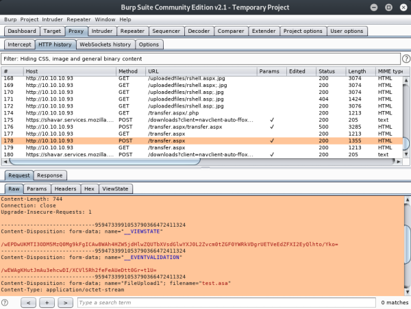
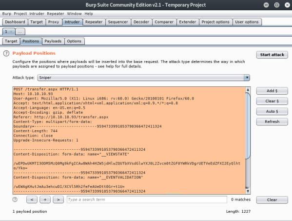
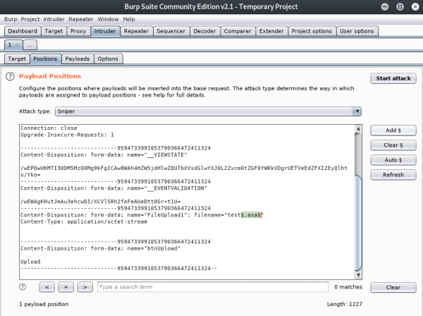
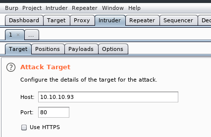
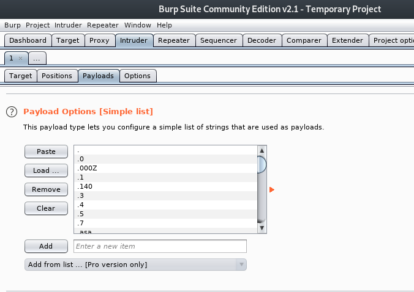
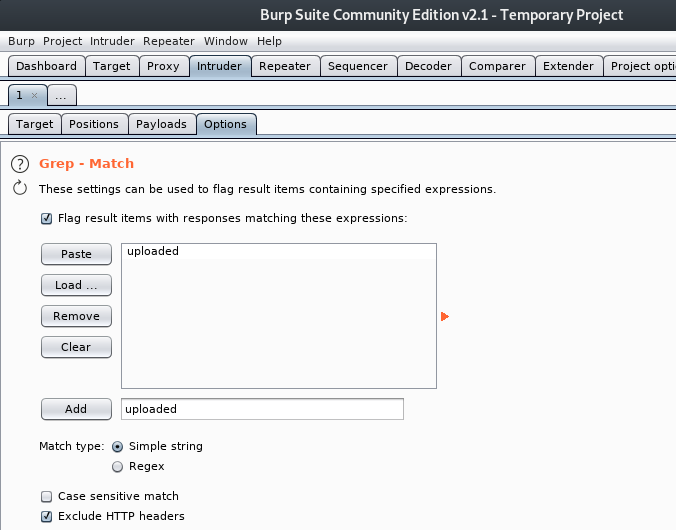
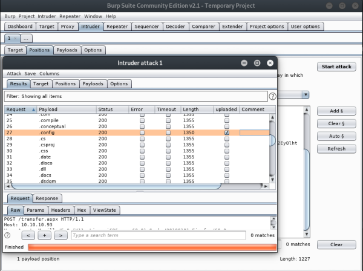

# File Upload - Find valid file extensions via bruteforce
If every file extension you upload seems to be blocked, you can trying using a wordlist and bruteforcing file uploads until you've found a valid extension
## with Burp Intruder
This is made quite easy using Burp Intruder.
You can grab a file extension list and a bruteforce upload files until one's successful.
### 1) Set up burp as a proxy and capture an ‘upload file’ request by uploading a file to the webserver
You should see the request under the Proxy > HTTP history tab
Copy/paste the entire request under Raw > Request into Intruder > Positions
### 2) Highlight the file extension in the upload request and click
Add §
This will mark the file extension as the string you want to bruteforce
### 3) Configure target
Under
Target, set the Host and Port
### 4) Payload Options - Set wordlist
Under Intruder > Payloads input your list of file extensions to bruteforce in Payload Options
### 5) Set success flag
You need to be able to tell when a file has uploaded successfully.
I know that, on this site, when a file uploads successfully the web page prints a
File uploaded successfully! string.
Under
Intruder >
Options >
Grep - Match, I added a string of "uploaded" that Burp will search the requrest response for to notify me if a file uploaded successfully.
If you don't have/don't know/can't get a success string, you can observe the length of the responses in the results.
If a certain file extension has a different response than the rest of the attempts, that means something different has happened and you should check the response manaully.
### 6) Start attack
Start the attack and wait for th results.
Burp slows their attack down after the first few requests because they want you to buy premium.
